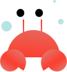
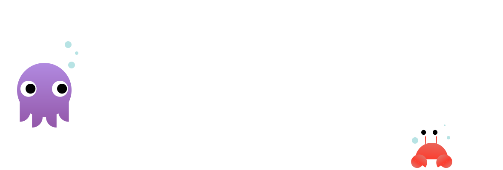
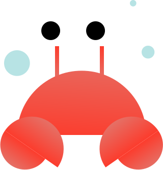

One Fish,
Two Fish,
Red Fish,
Bool Fish.
How Koda the octopus found her way home from the Boolean Sea.

One day, in the bright blue ocean...

a napping young octopus named Koda floated away from home and woke up in the Boolean Sea.
Koda was lost and did not know how to float home.
In the Boolean Sea there were Bool Fish. Bool Fish could only say YES or NO.

Koda needed help finding her way home, so she floated first to a Bool Fish named False.

“I want to float home,” Koda said. “Can you please help me to find Coral Repo?”

Koda didn’t want to give up. “Have you seen any other octopuses?”
“Do you know anyone who can tell me how to float home?”
Koda said thank you and floated over to a Bool Fish named True.

“Hello! Do you know how to float to Coral Repo?”

“Great! Which way do I float?”

Koda didn’t understand these fish. She said thank you and floated away from the two Bool fish.
Suddenly, Koda saw a crab on the bottom of the ocean. Koda thought the little crab might be able to help, so she floated down to the ocean floor.


“Do you know the way to Coral Repo?”

“My octopus friend, you’re in Boolean Sea!” the little crab said. “Did you try getting help from the Bool Fish?"

“I asked them the way to Coral Repo, but they only said YES and NO..."
“Of course they did!” said the crab. “They’re Bool Fish!”
“Bool Fish can only say YES or NO,” the crab said. “But that's okay!"
“So they can still help me?” Koda asked.
“Yes! But you have to talk to them in a way they understand,” the crab said. "Can you think of a question that could be answered with a YES or a NO?"